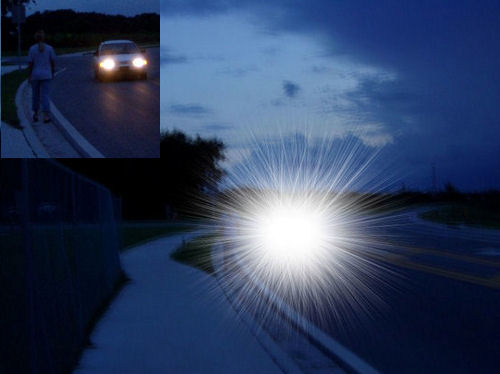
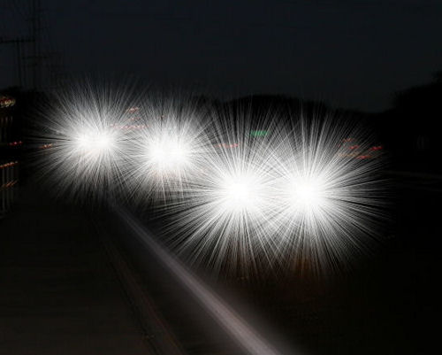
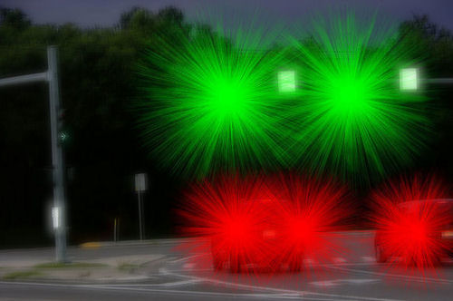
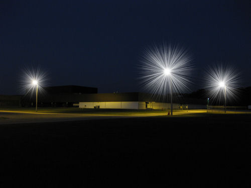

Starburst effect, or starbursting, is a common complication of laser eye surgery. LASIK surgeons use the term "glare" to describe starbursts after LASIK. Patients with large pupils are at increased risk of experiencing severe forms of starbursts. All prospective patients should be warned of the risk of diminished night vision after LASIK.
In general, the severity of starbursts depends on the size of the patient's pupils at night relative to the size of the laser treatment (optical zone). Driving at night can be extremely dangerous for some patients after laser eye surgery. The American Academy of Ophthalmology reports that night-time starbursts occur frequently after LASIK (Sugar et al, 2002). LASIK surgeons assert that patients eventually adapt to seeing starbursts at night; however, patients with large pupils may suffer permanent, debilitating visual disturbances as illustrated below.
Accurate pupil measurement is a critical step in screening for LASIK. Patients whose pupil size exceeds the size of the laser optical zone (not including the blend zone) are not good candidates for LASIK.
In the photo below, a pedestrian walking by the side of the road is obscured by the starburst from the headlights of a car.

The photo below illustrates how a LASIK patient may see oncoming cars at night. LASIK patients who suffer from night vision disturbances such as this, as well as others sharing the road, are at risk of night-time traffic accidents.

The next photo depicts severe night vision problems after LASIK.

The next image shows how many LASIK patients see street lights at night.

Related Topics: Large Pupils and LASIK and Night Vision after LASIK